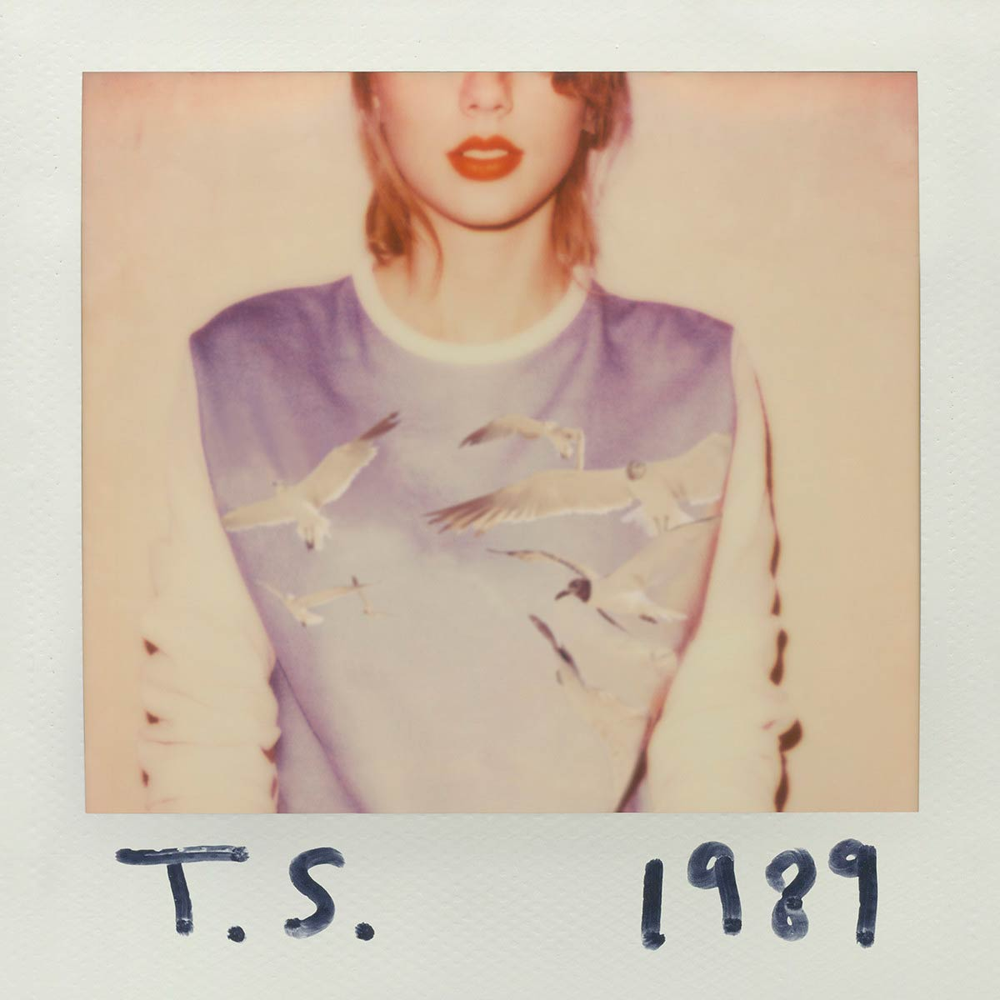
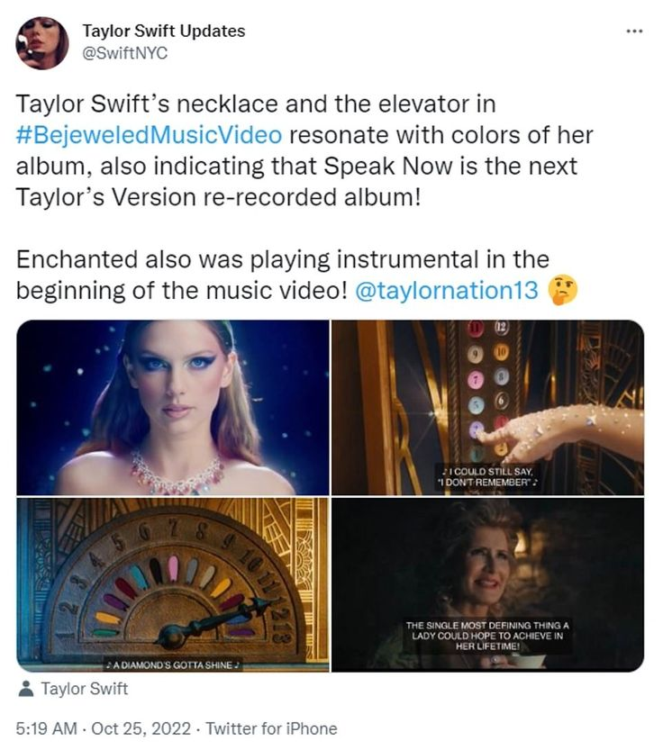

"1989 (Taylor’s Version)" conquista las listas
Autor: SwiftFan2025
Publicado el: 10 de octubre de 2025

Taylor Swift ha vuelto a lanzar uno de sus álbumes más icónicos: 1989 (Taylor’s Version).
El relanzamiento incluye nuevas canciones “From the Vault” y una producción renovada.
Con este proyecto, Taylor continúa su esfuerzo por recuperar el control de su catálogo musical.
Los fans han mostrado un enorme apoyo, y el álbum ya está rompiendo récords en streaming.
El fenómeno de “The Eras Tour”
Autor: MusicLover
Publicado el: 5 de septiembre de 2025

“The Eras Tour” ha sido uno de los tours más exitosos de la historia. Cada show es una celebración
de las diferentes etapas de la carrera de Taylor Swift.
Desde su debut country hasta sus éxitos pop más recientes, el espectáculo es una experiencia inolvidable
para los fans de todas las edades.
Taylor Swift y su impacto en la industria musical
Autor: MelodyWriter
Publicado el: 20 de agosto de 2025
Taylor Swift ha cambiado la forma en que los artistas manejan sus carreras. Su defensa por los derechos
de los músicos y su independencia creativa la han convertido en una figura influyente.
Además, ha demostrado que la autenticidad y la narrativa personal pueden ser poderosas herramientas en la música.
Los Easter Eggs de Taylor: un lenguaje secreto para los fans
Autor: SwiftieDetective
Publicado el: 2 de julio de 2025

Desde hace años, Taylor Swift es conocida por dejar pistas ocultas (“Easter Eggs”) en sus videoclips,
letras y publicaciones. Los fans disfrutan descifrando cada detalle.
Esta interacción ha creado una comunidad en línea muy activa, que analiza todo lo que Taylor publica,
buscando el próximo gran anuncio.
Colaboraciones memorables
Autor: PopCultureFan
Publicado el: 15 de junio de 2025
A lo largo de su carrera, Taylor ha colaborado con artistas como Ed Sheeran, Kendrick Lamar y Bon Iver.
Cada colaboración ha mostrado una nueva faceta de su estilo musical.
Estas asociaciones no solo demuestran su versatilidad, sino también su capacidad para unir géneros y generaciones.